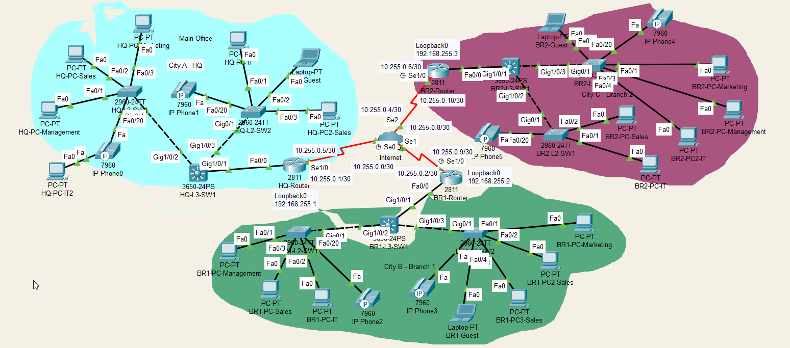

Detailed network diagram including end devices and port connections.
WAN-QoS-Policy is applied outbound on all serial interfaces to manage congestion and prioritize critical traffic like voice and call signaling over bulk data.| Connection | Router 1 | DLCI 1 | Router 2 | DLCI 2 |
|---|---|---|---|---|
| HQ <-> BR1 | HQ-Router (S1/0.102) | 102 | BR1-Router (S1/0.201) | 201 |
| HQ <-> BR2 | HQ-Router (S1/0.103) | 103 | BR2-Router (S1/0.301) | 301 |
| BR1 <-> BR2 | BR1-Router (S1/0.203) | 203 | BR2-Router (S1/0.302) | 302 |
| Network | HQ-Router IP | BR1-Router IP | BR2-Router IP |
|---|---|---|---|
10.255.0.0/30 | 10.255.0.1 | 10.255.0.2 | - |
10.255.0.4/30 | 10.255.0.5 | - | 10.255.0.6 |
10.255.0.8/30 | - | 10.255.0.9 | 10.255.0.10 |
HQ-Router. This centralizes control, numbering plans, and phone configurations.BR1 and BR2 act as gateways. They use dial-peers to route all call traffic to the central CME at HQ for processing, rather than handling calls locally.option 150, which points them to the TFTP server on HQ-Router (192.168.255.1) to download their settings.| Number Range | Assigned Site | Purpose |
|---|---|---|
1xxx | Headquarters (HQ) | HQ Staff Phones |
2xxx | Branch 1 (BR1) | Branch 1 Staff Phones |
3xxx | Branch 2 (BR2) | Branch 2 Staff Phones |
| MAC Address | Assigned Number | Site |
|---|---|---|
00D0.BA21.6903 | 1001 | HQ |
00E0.A385.973C | 1002 | HQ |
0090.2B3D.E76A | 2001 | Branch 1 |
0060.5C84.57C2 | 2002 | Branch 1 |
00D0.FF21.D0CB | 3001 | Branch 2 |
0001.6329.7EE2 | 3002 | Branch 2 |
| Device Type | Model | Quantity | Role / Key Functions | Location(s) |
|---|---|---|---|---|
| Router | Cisco 2811 ISR |
3 | WAN Gateway, Inter-VLAN Routing, DHCP, QoS, Security (ACLs). HQ-Router also serves as the central CME. | HQ, BR1, BR2 |
| Layer 3 Switch | Cisco Catalyst 3650-24PS |
3 | LAN Core / Distribution Switch, provides trunk connectivity to access layer switches, STP Root Bridge for the local site. | HQ, BR1, BR2 |
| Layer 2 Switch | Cisco Catalyst 2960-24TT |
6 | Access Layer connectivity for end devices, enforces Port Security, provides PoE for phones. | HQ, BR1, BR2 |
| IP Phone | Cisco 7960 |
6 | Voice communication endpoint for users. Registers with the central CME server at HQ. | HQ, BR1, BR2 |
| End Devices | PC / Laptop |
16 | User workstations providing access to network resources. | HQ, BR1, BR2 |
| VLAN ID | Name | Purpose | HQ Network | BR1 Network | BR2 Network | Default Gateway |
|---|---|---|---|---|---|---|
| 10 | Management | Device Management | 10.0.10.0/24 | 10.1.10.0/24 | 10.2.10.0/24 | 10.x.10.1 |
| 20 | Sales | Sales Department | 10.0.20.0/24 | 10.1.20.0/24 | 10.2.20.0/24 | 10.x.20.1 |
| 30 | Marketing | Marketing Department | 10.0.30.0/24 | 10.1.30.0/24 | 10.2.30.0/24 | 10.x.30.1 |
| 40 | IT | IT Department | 10.0.40.0/24 | 10.1.40.0/24 | 10.2.40.0/24 | 10.x.40.1 |
| 50 | Guest | Guest Network | 10.0.50.0/24 | 10.1.50.0/24 | 10.2.50.0/24 | 10.x.50.1 |
| 60 | VoIP | IP Telephony | 10.0.60.0/24 | 10.1.60.0/24 | 10.2.60.0/24 | 10.x.60.1 |
| 999 | NATIVE_VLAN | Untagged Trunk Traffic | - | - | - | - |